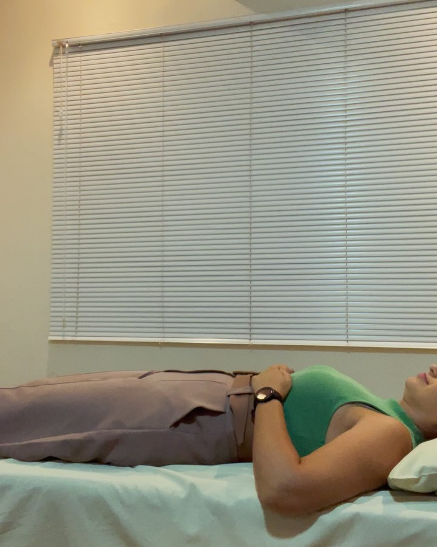
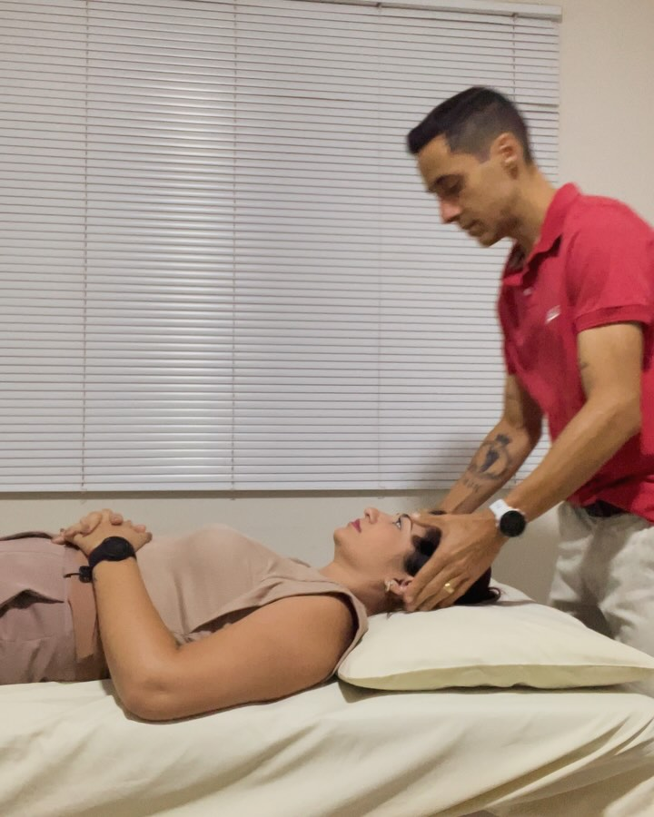
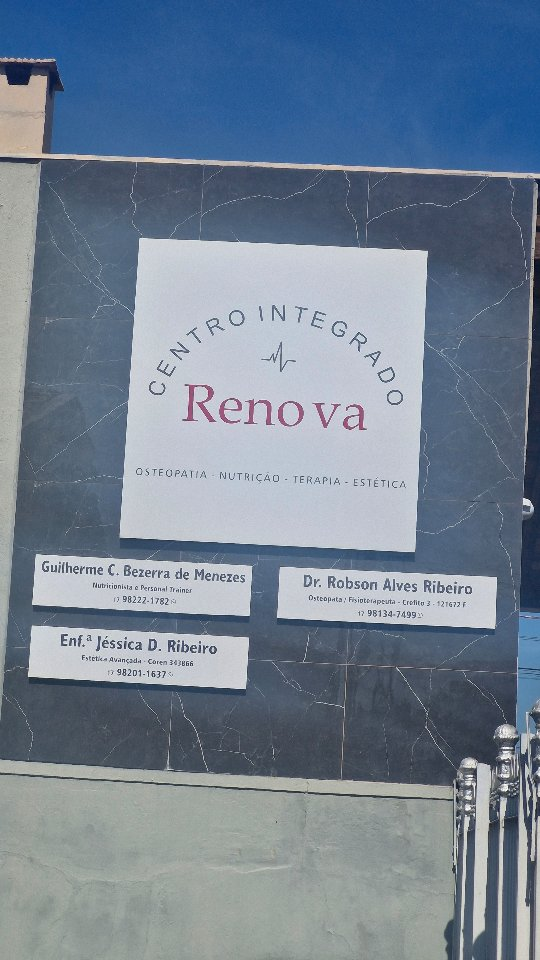

01
Osteopatia
Avaliação e técnicas manuais voltadas à mobilidade, às tensões e ao funcionamento integrado do corpo.
Cuidado integrado em Barretos
Uma equipe multidisciplinar para compreender suas necessidades, orientar seu cuidado e acompanhar sua evolução com atenção individualizada.

Centro Integrado Renova
Dor, limitação de movimento, recuperação esportiva ou mudança de hábitos raramente existem de forma isolada. Por isso, o Renova reúne diferentes áreas para construir um acompanhamento coerente com a realidade de cada pessoa.
Como podemos cuidar de você
Cada serviço começa por avaliação profissional e pode integrar outras áreas conforme a necessidade identificada.
Avaliação e técnicas manuais voltadas à mobilidade, às tensões e ao funcionamento integrado do corpo.
Cuidado direcionado a praticantes de atividade física, respeitando rotina de treinos e objetivos individuais.
Prática complementar realizada por profissional habilitado, mediante avaliação e indicação individual.
Estratégias alimentares construídas para sua rotina, preferências, saúde e objetivos possíveis.
Planejamento de exercícios com orientação próxima, progressão e atenção à execução.
Quando indicado, profissionais atuam de forma complementar para acompanhar diferentes dimensões da sua evolução.

Osteopatia na prática
A osteopatia utiliza avaliação clínica e técnicas manuais para compreender relações entre mobilidade, tensões e desconfortos. O plano de cuidado é definido após uma análise individual.
Para quem vive em movimento
Corredores e praticantes de outras modalidades encontram no Renova um acompanhamento que considera carga de treino, mobilidade, tensões e recuperação. Sempre a partir de avaliação e sem promessas de resultado.
Esporte · mobilidade · recuperação
Profissionais
Formado em Fisioterapia pela UNORP e em Osteopatia pelo IDOT, conduz avaliações e atendimentos osteopáticos.
Conhecer o profissional ↗Atua com ozonioterapia e liberação esportiva, sempre mediante avaliação individual e dentro de sua habilitação profissional.
Conhecer os atendimentos ↗Nutricionista e personal trainer, une alimentação e movimento em estratégias adaptadas à rotina e aos objetivos de cada pessoa.
Conhecer o profissional ↗Agende sua avaliação
Entre em contato com a equipe, conte brevemente sua necessidade e receba orientação sobre o atendimento mais adequado.
Av. Três, 1549 — Rios
Barretos/SP · CEP 14780-320
As informações desta página têm caráter institucional e não substituem avaliação, diagnóstico ou orientação de um profissional de saúde. Indicações e condutas dependem de avaliação individual.